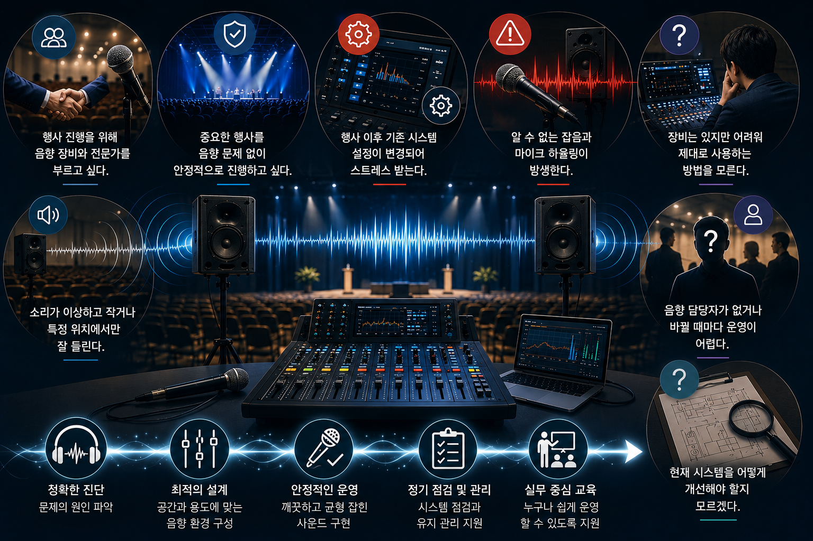
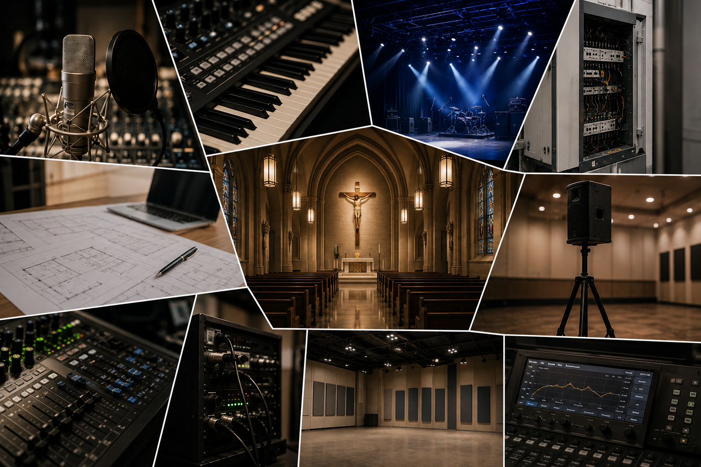

Sound System Installation · Operation · Inspection · Consulting · Education
CLEMENSound
“사람과 공간을 먼저 생각하는 음향 기술 서비스”
클레멘사운드는 음향 장비 판매, 렌탈 업체가 아닙니다.
16년 경력의 음향 전공자가 직접 상담부터 행사 음향 지원, 기존 시스템 점검 및 컨설팅, 운영자 교육을 전문으로 하는 음향 기술 서비스입니다.
단순히 장비만을 설치하는 것이 아니라 공간의 특성과 사용 목적을 분석하고, 누구나 안정적으로 듣고 사용 할 수 있는 음향 환경을 만드는 데 집중합니다.
Sound Check
이런 고민이 있으신가요?
이런 고민이 있으신가요?

음향에 대한 고민 클레멘사운드가 함께 해결해 드립니다.
Why CLEMENSound
왜 CLEMENSound에 맡겨야 할까요?
음향 업체는 많습니다.
하지만 소규모 행사, 종교시설, 교육 공간의 특성을 이해하고 직접 상담부터 세팅, 운영, 시스템 점검, 교육까지 책임지는 음향 전문가는 많지 않습니다.
녹음실 엔지니어, 전자악기 사운드 연구개발, 뮤지컬 & 연극 & 라이브 공연 현장 운영, 시스템 설비 점검, 대학 출강, 밴드 활동 등의 다양하고 풍부한 경험을 가진 음향 전공자가 직접 운영하며 단순한 장비 운용이 아닌 문제의 원인을 찾고 해결하는 데 집중합니다.
행사를 위한 일회성 세팅에 그치지 않고 공간의 특성과 사용 목적을 분석하여 최적의 음향 환경을 구성합니다.
또한 기존 시스템의 문제점을 진단하고 개선 방안을 제안하며 담당자가 직접 안정적으로 운영할 수 있도록
실무 중심의 교육도 제공합니다.
좋은 음향은 비싼 장비가 아니라 고객과 현장을 이해하는 사람에게서 시작된다고 믿습니다.
